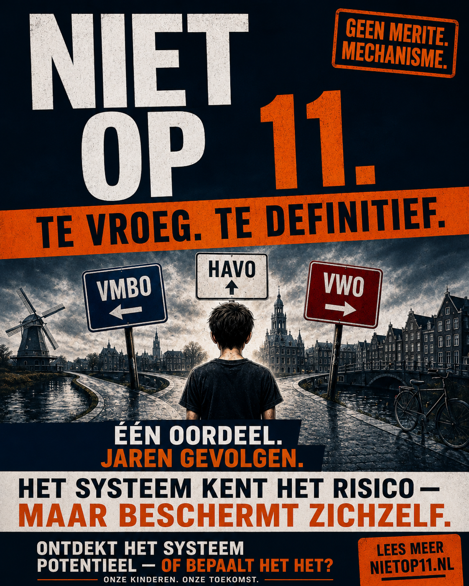

{kind=link}
{kind=link}
van kinderen uit lage-inkomensgezinnen krijgt VMBO of VMBO-gt/HAVO advies.of children from low-income families receive VMBO or VMBO-gt/HAVO advice.
Publiek dossier over vroeg schooladviesPublic dossier on early school advice
Niet op 11.Not at 11. Te vroeg. Te definitief.Too early. Too final.
Het sprookje is dat VMBO-t nog altijd naar de universiteit kan leiden. Op papier kan dat. In de cijfers is het anders: HBO komt voor. WO is de uitzondering. Een VMBO-t advies maakt de route langer, duurder en afhankelijker van ouders die het spel kennen.The fairytale is that VMBO-t can still lead to university. On paper, it can. The numbers say something else: HBO happens. Research university is the exception. A VMBO-t recommendation makes the route longer, costlier and more dependent on parents who know the game.
VMBO-t is geen WO-routeVMBO-t is not a research-university route
WO = bergbeklimmenResearch university = mountaineering
De wens van het kind telt nietThe child’s wish does not count

VMBO-t naar WO is de uitzondering, niet de route.VMBO-t to research university is the exception, not the route.
Een omweg is geen gelijke kans.A detour is not equal opportunity.
Nederland haat klasse — dus noemt het selectie “advies”.The Netherlands hates class — so it calls selection “advice”.
Geen quotum nodigNo quota needed
Er is geen geheim percentage. De machine verdeelt vanzelf.There is no secret percentage. The machine distributes by itself.
Dit is de val: mensen zoeken een verborgen quotum. Dan zegt het systeem: “er is geen quotum,” en het gesprek stopt. Maar een quotum is niet nodig wanneer normering, verwachtingen, ouderlijke systeemkennis en vroege tracking samen dezelfde verdeling blijven produceren.This is the trap: people look for a hidden quota. Then the system says “there is no quota,” and the conversation stops. But a quota is not needed when norming, expectations, parental system knowledge and early tracking keep producing the same distribution.
Geen quotum.No quota.
Wel een verdeelmachine.Still a distribution machine.
Hendel 1Lever 1
ToetsnormeringTest norming
De toetsbanden zijn geen natuurwet. Per toetsaanbieder kan het aandeel VWO-advies sterk verschillen.Test bands are not a law of nature. The VWO-advice share can differ strongly by test provider.
19–37%
Hendel 2Lever 2
SchooloordeelSchool judgement
Het definitieve advies is leidend. Een hoger toetsadvies helpt alleen als school het advies werkelijk optrekt.The final school advice is decisive. A higher test advice only helps if the school actually raises the advice.
LeidendDecisive
Hendel 3Lever 3
KlassekapitaalClass capital
Wie de route kent, kan duwen. Wie school vertrouwt, wordt makkelijker “realistisch” naar beneden gelezen.Those who know the route can push. Those who trust the school are more easily read downward as “realistic”.
68% / 11%Steeds andere kinderen. Opvallend dezelfde uitkomst.Different children each year. Strikingly similar output.
Steeds een nieuw cohort. Toch bijna dezelfde vorm. Dat is het punt: je hebt geen officieel quotum nodig wanneer toetsconstructie, schooloordeel en thuiskapitaal jaar na jaar dezelfde verdeling blijven produceren.Each year brings a new cohort. Yet the shape is almost the same. That is the point: you do not need an official quota when test construction, school judgement and home capital keep producing the same distribution year after year.
van kinderen uit lage-inkomensgezinnen krijgt VWO advies.of children from low-income families receive VWO advice.
van kinderen uit hoge-inkomensgezinnen krijgt VWO advies.of children from high-income families receive VWO advice.
lager schooladvies dan toetsadvies: lage inkomens versus hoge inkomens.lower school advice than test advice: low income versus high income.
Geen quotum nodig. De uitkomst is stabiel. De hiërarchie blijft staan. No quota needed. The output is stable. The hierarchy remains.
VMBO-t als voorbeeld: bergbeklimmenVMBO-t as example: mountaineering
Ze noemen het zelf bergbeklimmen.They call it mountaineering themselves.
De standaard verdediging is: “via VMBO-t kun je later nog altijd omhoog.” Niet te vroeg gemeten. De overheid telde de hele klim. Alle stapelroutes meegeteld. Na elf tot twaalf jaar bereikt minder dan 3% WO-bachelorniveau.The standard defence is: “through VMBO-t you can still move up later.” Not measured too early. The government counted the whole climb. Every stacking route counted. After eleven to twelve years, fewer than 3% reach research-university bachelor level.
SPINESPINE
RecordRecordOCW · Onderwijs in cijfers — “Bergbeklimmers in het onderwijs”
CohortenCohorts2004–2007
MeetduurMeasurement period11–12 jaar / years
UitkomstOutcomeminder dan 3% naar WO-bachelorfewer than 3% to research-university bachelor
Hun woordTheir word“bergbeklimmers”
eindigt op WO-bachelorniveau vanuit gemengd/theoretisch vmbo. Niet een vijfjaarsmoment. De hele berg.end at research-university bachelor level from mixed/theoretical VMBO. Not a five-year snapshot. The whole mountain.
13% naar HAVO.13% to HAVO.
In 2025–2026 stroomt rond 13% van de vmbo-tl geslaagden door naar HAVO. De eerste stap omhoog is al smal.In 2025–2026, around 13% of VMBO-tl graduates move on to HAVO. The first step upward is already narrow.
Stapelen: 6%.Stacking: 6%.
Het totale aandeel gediplomeerden dat stapelt daalt naar 6% in 2025–2026. De route omhoog wordt niet normaler.The total share of graduates who stack falls to 6% in 2025–2026. The upward route is not becoming normal.
Een route is iets wat je loopt. Een berg is iets wat bijna niemand haalt.A route is something you walk. A mountain is something almost nobody climbs.
Je zet een kind niet op een berg en noemt het gelijke kansen.You do not put a child on a mountain and call it equal opportunity.
Wie vraagt het kind?Who asks the child?
De ambitie van het kind heeft geen harde plek.The child’s ambition has no hard place.
Het systeem weegt toetsen, dossier, gedrag, taal, werkhouding, ouders en schoolinschatting. Maar wat het kind zelf wil worden — universiteit, wetenschap, arts, ingenieur, schrijver, ondernemer — beslist niet mee met dezelfde kracht als het schooloordeel. Ambitie wordt behandeld als ruis wanneer die niet past bij het vroege oordeel.The system weighs tests, records, behaviour, language, work habits, parents and school judgement. But what the child wants to become — university, science, doctor, engineer, writer, entrepreneur — does not count with the same force as the school judgement. Ambition is treated as noise when it does not fit the early judgement.
Het systeem vraagt: “Wat schatten wij in?” Niet: “Welke toekomst wil dit kind bouwen?”The system asks: “What do we estimate?” Not: “What future does this child want to build?”
Het verborgen klassensysteemThe hidden class system
Niet iedereen speelt hetzelfde spel.Not everyone is playing the same game.
Nederland wil geen klassenmaatschappij zijn. Daarom ziet het er niet uit als klasse. Het ziet eruit als schooladvies, oudergesprek, “realistisch niveau” en een nette procedure. Maar de machine beloont ouders die de code kennen — en straft gezinnen die de school vertrouwen.The Netherlands does not want to see itself as a class society. So class does not look like class. It looks like school advice, parent meetings, “realistic level” and a clean procedure. But the machine rewards parents who know the code — and punishes families who trust the school.
Zo werkt de Nederlandse standenladder
How the Dutch status ladder works
Startpositie thuisStarting position at home
1
Universiteit is normaalUniversity is normal
Ouders kennen HAVO/VWO, dubbeladvies, bezwaar, bijles, schoolkeuze en timing.Parents know HAVO/VWO, double advice, objections, tutoring, school choice and timing.
2
Gewoon gezinOrdinary family
Vertrouwt op school. Kent de verborgen routekennis vaak pas achteraf.Trusts the school. Often learns the hidden route knowledge too late.
3
Eerste generatie / migrant / lage SESFirst-generation / migrant / low SES
Minder systeemmacht. Meer ruis. Meer “voorzichtig” advies naar beneden.Less system power. More noise. More “careful” downward advice.
De adviesmachine op 11The advice machine at 11
Ouderlijk kapitaalParental capital+
RoutekennisRoute knowledge+
Druk kunnen zettenAbility to push back+
Taal / dyslexie / ruisLanguage / dyslexia / noise−
Laag vertrouwen van schoolLower school expectation−
Wat ontbreekt? Wat het kind zelf wil.
What is missing? What the child wants.
VoorsprongrouteAdvantage route
HAVO/VWO blijft openHAVO/VWO stays open
Meer tijd. Meer opties. Directere route naar HBO/WO.More time. More options. More direct route to HBO/WO.
Gewone routeOrdinary route
VMBO-t als “realistisch” plafondVMBO-t as a “realistic” ceiling
MBO-stapeling. Meer poorten. Meer uitvalmomenten. WO wordt minder dan 3%.MBO stacking. More gates. More dropout points. Research university becomes fewer than 3%.
28–45%van de ruwe SES-kloof in advies blijft over na gemeten vaardigheden.of the raw SES advice gap remains after measured skills.
3,44–4,28×hogere kans op hoger onderwijsniveau op 17 jaar voor kinderen van universitair opgeleide ouders.higher odds of a higher educational level at 17 for children of university-educated parents.
12%van het SES-verschil in het vermijden van neerwaartse routes hangt samen met ouderlijke systeemkennis.of the SES difference in avoiding downward routes is linked to parental system knowledge.
De ongemakkelijke waarheid: wie bovenaan begint, krijgt extra tijd. Wie onderaan begint, krijgt “realisme”.
The uncomfortable truth: those who start at the top get extra time. Those who start at the bottom get “realism”.
Dit is geen open ladder. Dit is een sorteermachine met nette woorden.
This is not an open ladder. It is a sorting machine with polite words.
De feiten, niet de excusesFacts, not excuses
Het systeem weet waar het misgaat.The system knows where it fails.
De officiële regels en de wetenschap wijzen naar dezelfde plek: vroege, subjectieve inschatting wordt gevaarlijk zodra zij toegang tot routes bepaalt.The official rules and the research point to the same place: early subjective judgement becomes dangerous once it controls access to routes.
Groep 7 is geen eindoordeel.Year 7 pre-advice is not a final judgement.
Het juridisch beslissende traject loopt in groep 8: voorlopig advies, doorstroomtoets, definitief advies.The legally decisive sequence happens in the final primary year: provisional advice, progression test, final advice.
Bij twijfel: hoger denken.When in doubt: aim higher.
De officiële handreiking zegt dat onderschatten erger is dan overschatten en dat twijfel ruimte vraagt: dubbeladvies, dakpanklas, kansrijk adviseren.Official guidance says underestimating is worse than overestimating and that uncertainty calls for space: double advice, mixed bridge classes, ambitious advice.
De remmen staan op papier.The safeguards exist on paper.
Meer dan 1 op de 3 leerlingen scoort hoger op de toets dan het voorlopige advies. Meer dan 70% van hen krijgt geen bijstelling omhoog.More than 1 in 3 pupils score higher on the test than the provisional advice. More than 70% of them receive no upward adjustment.
Verwachtingen werken door.Expectations feed forward.
Nederlandse data laten zien dat verwachtingsbias niet bij het advies stopt: zij werkt door in latere prestaties.Dutch data show expectation bias does not stop at the recommendation: it feeds into later performance.
Complexe profielen worden laag gelezen.Complex profiles are read low.
Leerlingen met ongelijke prestaties tussen vakken krijgen conservatievere adviezen. Eenzijdig getalenteerde leerlingen belanden vaker laag, ondanks sterke domeinen.Pupils with uneven performance across subjects receive more conservative recommendations. One-sided talented pupils are placed lower despite strong domains.
Klasse lekt het advies in.Class leaks into the advice.
Een substantieel deel van het SES-verschil in adviezen blijft over nadat gemeten vaardigheden zijn meegenomen.A substantial part of the SES gap in recommendations remains after measured skills are taken into account.
De machineThe machine
Het systeem maakt het bewijs dat het later gebruikt.The system creates the evidence it later uses.
Dat is de kern. Niet één slechte leraar. Niet één boze ouder. Een structuur die een vroege inschatting omzet in een andere onderwijsomgeving.That is the core. Not one bad teacher. Not one angry parent. A structure that turns an early judgement into a different educational environment.
InschattingEstimate
Een kind wordt gelezen door cijfers, gedrag, taal, dossier en verwachting.A child is read through marks, behaviour, language, records and expectation.
AdviesAdvice
Die lezing wordt één ladderpositie: vmbo, havo, vwo of iets ertussen.That reading becomes one ladder position: vmbo, havo, vwo or something in between.
VoorzieningProvision
De route verandert tempo, klas, curriculum, peers en verwachtingen.The route changes pace, class, curriculum, peers and expectations.
UitkomstOutcome
Jaren later lijkt het resultaat het oorspronkelijke oordeel te bevestigen.Years later, the result appears to confirm the original judgement.
Dat is geen meritocratie. Dat is pad-afhankelijkheid.That is not meritocracy. That is path dependency.
Wie betaalt de prijs?Who pays the price?
Kinderen die niet makkelijk te lezen zijn.Children who are not easy to read.
Het risico zit niet bij gemiddelde profielen. Het risico zit bij ruis: meertaligheid, dyslexie, ongelijke vakprestaties, hoge intelligentie met lage output, migratieachtergrond, lage SES, trauma, ziekte of een dossier dat niet rechtlijnig is.The risk is not concentrated around average profiles. It sits in noise: multilingualism, dyslexia, uneven subject performance, high ability with low output, migration background, low SES, trauma, illness or a record that is not linear.
De bewijsmuurThe evidence wall
Drie lijnen. Eén conclusie.Three lines. One conclusion.
De site is scherp aan de voorkant en zwaar aan de achterkant: officiële procedure, verwachtingswetenschap en Nederlandse ongelijkheidsliteratuur.The site is sharp at the front and heavy at the back: official procedure, expectancy science and Dutch inequality research.
Procedure: het advies stuurt toelating.Procedure: the advice drives admission.
De doorslag valt in groep 8. Een hogere toets kan alleen naar boven corrigeren. De school behoudt ruimte om niet bij te stellen. Dus de eerste inschatting blijft machtig.The decisive sequence occurs in the final primary year. A higher test can only correct upward. The school keeps room not to adjust. So the first judgement remains powerful.
- Voorlopig advies: januari
- Doorstroomtoets: jan/feb
- Definitief advies: maart
Psychologie: verwachtingen worden omgeving.Psychology: expectations become environment.
Teacher expectancy effects raken juist kinderen met atypische of inconsistente profielen. Daarna versterkt plaatsing het oordeel via curriculum, tempo, peers en verwachting.Teacher expectancy effects hit pupils with atypical or inconsistent profiles. Placement then amplifies the judgement through curriculum, pace, peers and expectations.
Vast punt: ongelijk profiel wordt conservatief gelezen.Settled point: uneven profiles are read conservatively.
Sociologie: SES wordt onderwijsroute.Sociology: SES becomes school route.
Het systeem voorspelt niet alleen vaardigheid. Het vertaalt ook ouderlijk kapitaal, informatie, schoolkeuze en thuisomgeving in track-advies.The system does not only predict ability. It also translates parental capital, information, school choice and home environment into track advice.
Vast punt: ouderlijk kapitaal lekt het advies in.Settled point: parental capital leaks into advice.
Cijfers die blijven hangenNumbers that stick
Niet alles is mening. Sommige dingen zijn meetbaar.Not everything is opinion. Some things are measurable.
bereikt WO-bachelorniveau vanuit gemengd/theoretisch vmbo. De basis is de hele klim, niet een vijfjaarsmoment.reach research-university bachelor level from mixed/theoretical VMBO. The basis is the whole climb, not a five-year snapshot.
van VMBO-g/t-diploma leerlingen zat vijf jaar later in het HBO. HBO is niet WO.of VMBO-g/t diploma pupils were in HBO five years later. HBO is not research university.
zit drie jaar na VMBO-gt advies nog op VMBO-gt. Slechts 10% zit op HAVO, 0% op VWO.are still at VMBO-gt three years after VMBO-gt advice. Only 10% are at HAVO, 0% at VWO.
van de ruwe SES-kloof in advies blijft onverklaard door gemeten vaardighedenof the raw SES advice gap remains unexplained by measured skills
Wat moet veranderenWhat must change
Geen universiteitsdroom begraven onder VMBO-t realisme.No university ambition buried under VMBO-t realism.
1. Geen definitieve versmalling op 11.1. No definitive narrowing at 11.
Houd routes langer open. Gebruik brede brugklassen en dakpanklassen als standaard bij onzekerheid.Keep routes open longer. Use broad and mixed bridge classes as the standard when there is uncertainty.
2. Bij onzekerheid: dubbeladvies.2. When uncertain: double advice.
Een complex profiel hoort niet te worden gestraft met voorzichtigheid naar beneden.A complex profile should not be punished with downward caution.
3. Maak afwijkingen zichtbaar.3. Make deviations visible.
Als toets, dossier en advies niet bij elkaar passen, moet de onderbouwing helder, schriftelijk en controleerbaar zijn.When test, record and advice do not align, the reasoning must be clear, written and auditable.
4. Tel de wens van het kind mee.4. Count the child's wish.
Een kind dat universiteit wil, hoort niet op elf jaar te worden afgekocht met: “via een omweg kan het misschien nog.”A child who wants university should not be dismissed at eleven with: “maybe through a detour.”
Onderbouwd. Niet onderdanig.Grounded. Not apologetic.
De claim staat.The claim stands.
De publieke boodschap is bewust kort: vroeg advies stuurt routes, verwachtingen werken door, en bekende correcties worden niet hard genoeg afgedwongen. De wetenschappelijke en procedurele onderbouwing zit achter de site — de site zelf is er om het punt vast te zetten.The public message is deliberately short: early advice directs routes, expectations feed forward, and known safeguards are not enforced hard enough. The scientific and procedural backing sits behind the site — the site itself exists to lock the point in.
VMBO-t is meestal eindrichting, geen WO-route.VMBO-t is usually a final direction, not a research-university route.
Klassekennis wordt onderwijsvoordeel.Class knowledge becomes educational advantage.
De wens van het kind telt niet hard genoeg.The child's wish does not count hard enough.